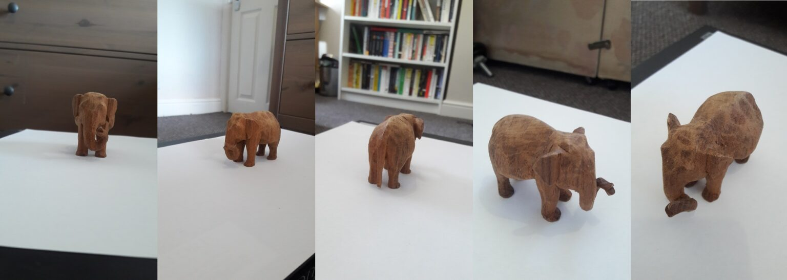
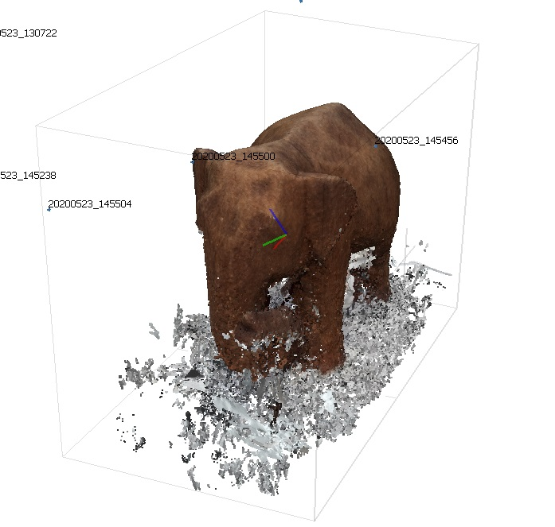

Having recently heard about photogrammetry for the first time in a Brown Institute lecture, I decided to give it a go.
The idea behind photogrammetry is to take a large number of pictures of an object/room/landscape and use them to construct a 3D model. This technique has been used to digitally recreate statues destroyed by ISIS, to analyse bomb craters, and – in my case – to create gently spinning wooden elephants. Behold:
A quick play with the model above will demonstrate that although the results were interesting, things did not go entirely perfectly for my first photogrammetry project. More on that later.
First off, a runthrough of the process I went through to create this model:
Step 1: Taking photographs
In order to get enough information to produce the model, I needed to take a large number of photographs of the elephant from lots of different angles. I stood the elephant on a makeshift book-plinth and shuffled around it on my belly, trying to get pictures with my smartphone from the side, above, and below.
This is possibly the most important part of the process, because no amount of technical tweaking can make up for poor source material. I found the trickiest aspects of this step were:
- making sure the lighting was strong and even
- getting good shots beneath the elephant.
I put a piece of white paper underneath the elephant in an attempt to improve the lighting. In hindsight, I think this blank surface might have made it more difficult for the 3D modelling software to figure out how different pictures related to one another. It may also be responsible for the slightly mouldy look on the bottom of the elephant. In the future, I would put marks on the paper to give the software something to easily grasp when sorting out scales and relationships.
Here are some examples of the photos I took:
Step 2: Importing to Metashape
I used the modelling software Metashape to turn these photographs into a set of 3D data points. This process was surprisingly automatic. I uploaded all the photographs as a set, made a couple of minor manual adjustments, and the software figured out the angles and relative positions of all the photos:

From this, Metashape produced a huge number of data points as it tried to map all the contours it had detected in the pictures.
Step 3: Editing the elephant
This was the most enjoyable part of the process. Metashape automatically maps all the data points it can find in the photographs, including everything it finds in the background. All this needs to be removed to leave us with a clean final model.
The process of cleaning up the 3D image is highly manual, requiring you to methodically remove any elements you don’t want in your finished model. The model goes through several iterations, from ‘loose cloud’ to ‘dense cloud’ to ‘mesh’, with the accuracy of the representation getting better at every step:

Loose cloud
Dense cloud

Mesh
Editing a 3D object on a 2D screen takes getting used to, but it is fun to chip away at all the erroneous data points, slowly building a clearer image. For instance, all of that white splash at the bottom of the ‘dense cloud’ image needed to be deleted, which required lots of rotating, zooming, and careful snipping (making sure I didn’t take a chunk of leg off in the process).
Step 4: Embedding the elephant
With a finished 3D model, the only thing left to do was embed the elephant into this webpage. I used the website Sketchfab for this.
Although this all seemed very straightforward, an error swiftly became apparent. My elephant was orientated upright, with its back to the user and its trunk in the air.
I booted up Metashape to fix this, but unfortunately my free trial has expired. So we will have to live with the elephant’s idiosyncratic jauntiness for the time being.
Conclusions
Things that went well:
- The photorealism of the wood is good. The tiny marks in the wood on the elephant’s back would have been hard to achieve with conventional 3D modelling.
- It’s a bit lumpy, but I am pleased with the complex shape of the trunk.
Things I would do differently in the future:
- The elephant is lumpy behind the ears and on the underside. I think this is due to lack of pictures from below. In the future, I will create a much thinner plinth for the model, so that I can take pictures at a better angle.
- There is a white, mouldy look to the underside of the elephant. I think this is the result of 1) using white paper as a background, 2) having insufficient pictures of the area, and 3) not cleaning up the model as precisely as I could have done.
- The object orientation is not right. I would fix this if I had a Metashape licence!
- Some areas have low detail (for example, the legs). I think that using an object with more clearly differentiated points (for example, a painted elephant model) would improve this.